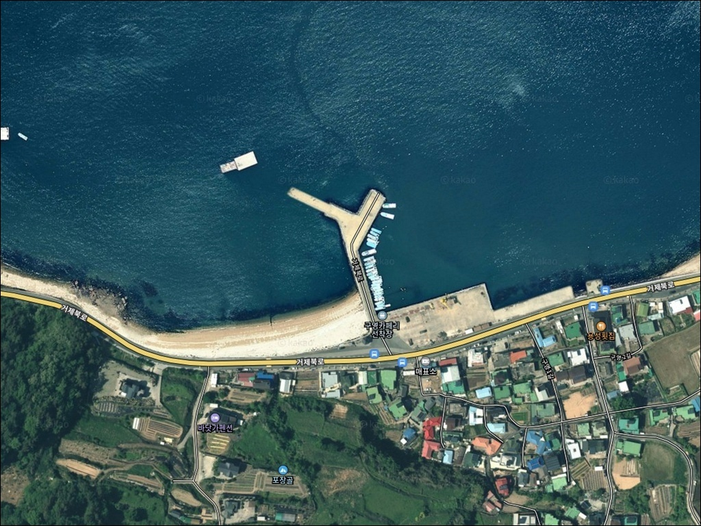
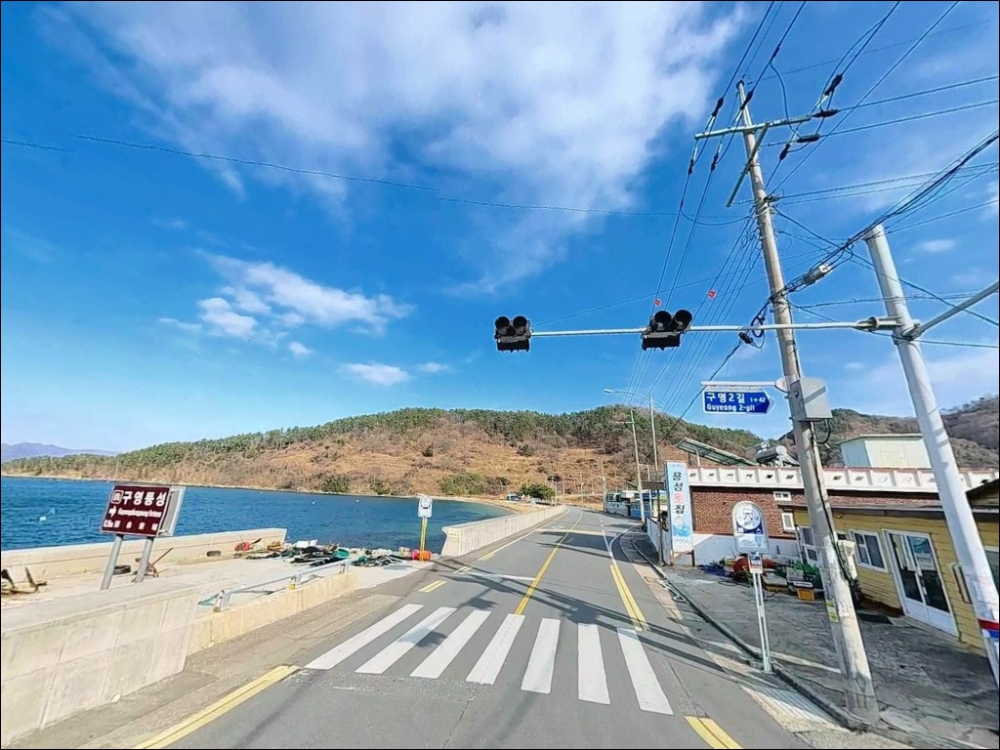
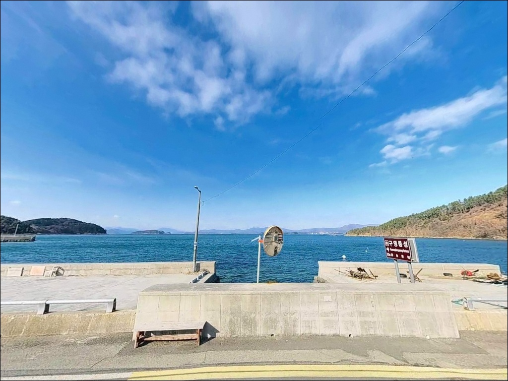
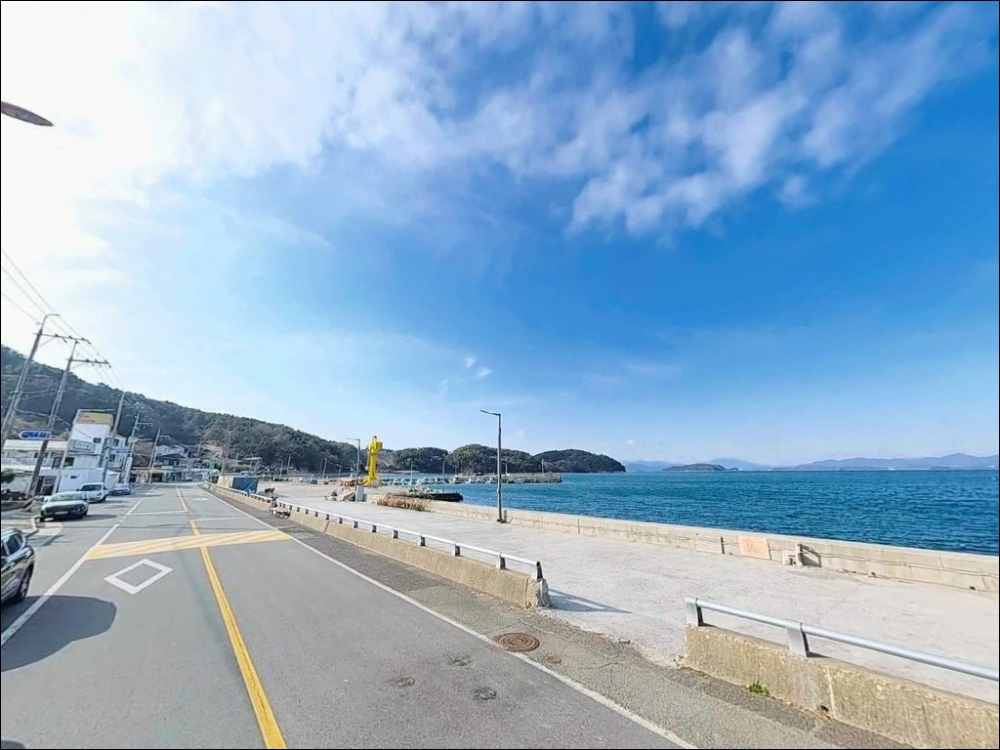
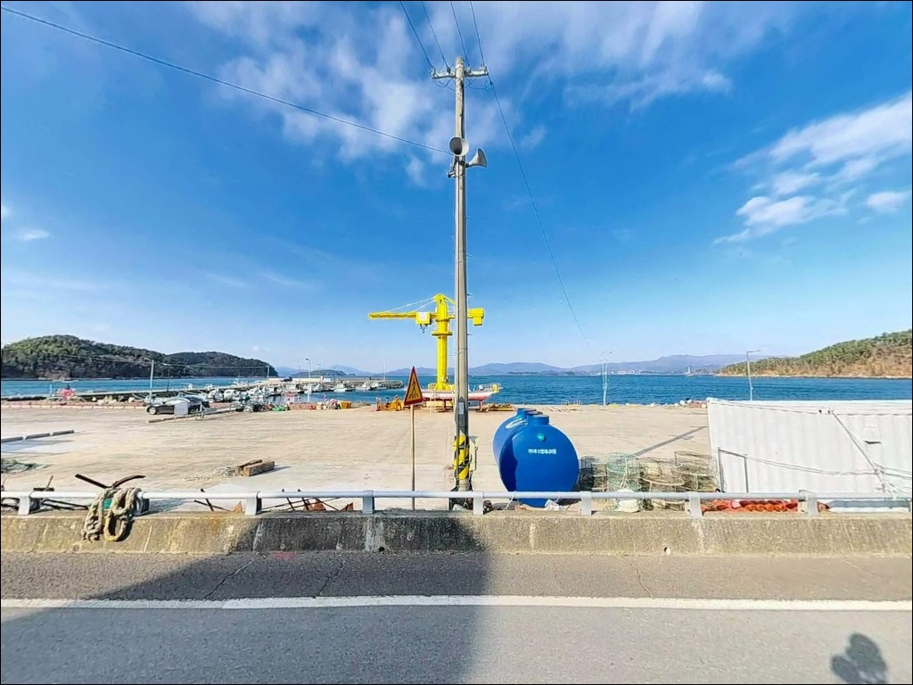
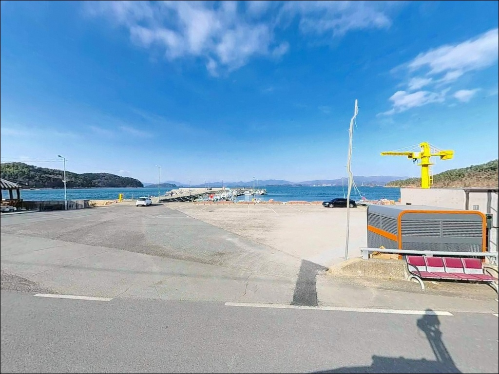
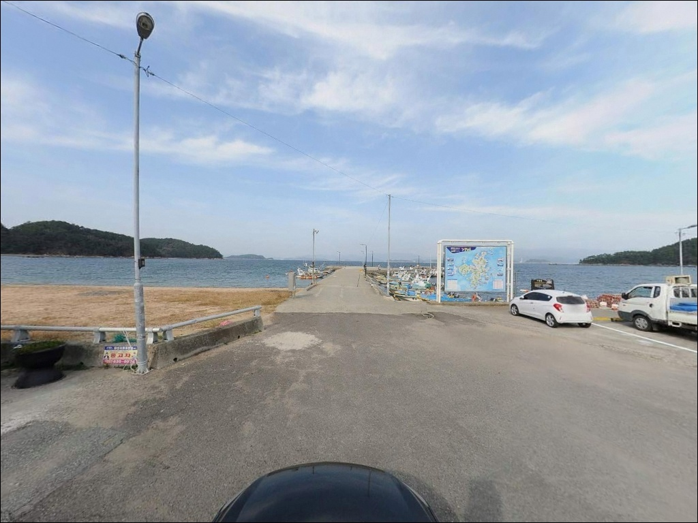
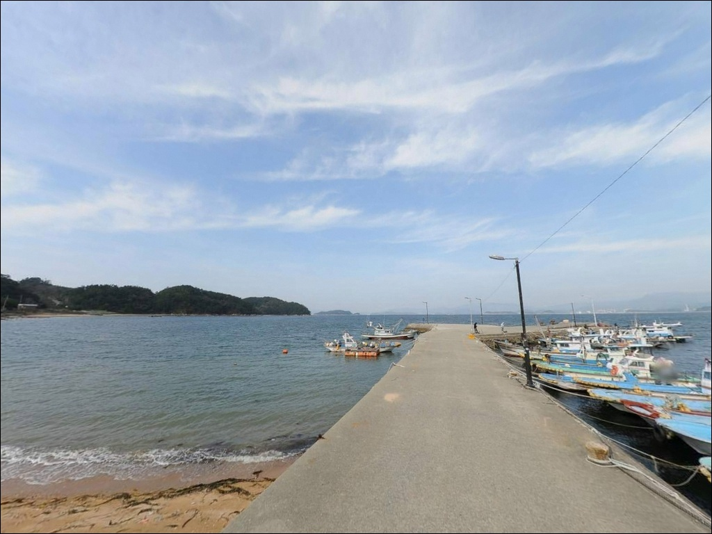
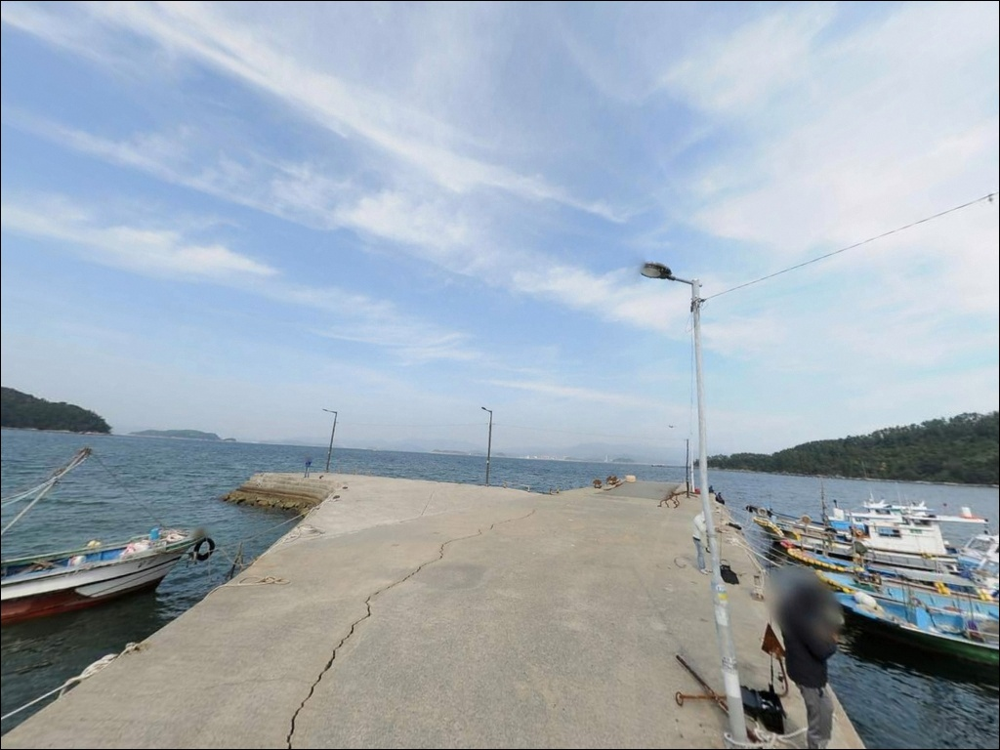

들물에 조류가 살아나는 거제 구영방파제, 외항 수심 8m의 차박 낚시


포인트 안내
구영방파제 (구영카페리선착장)
경남 거제시 장목면 구영리 329-9
구영방파제를 처음 찾는 낚시인이 가장 많이 놓치는 판단은
물때와 조류 방향입니다.
거가대교 인근 진해만 조류가 직접 닿는 해역이라
들물 타이밍을 빗나가면 외항 쪽 채비 컨트롤이 어려워지고,
원하는 자리에서 기대했던 반응을 얻기 힘든 구조입니다.
경남 거제시 장목면 구영리에 위치한 이 포인트는
과거 카페리가 드나들던 선착장 구조물을 그대로 갖추고 있으며,
구영해수욕장과 맞닿은 거제 북단의 방파제 낚시 포인트입니다.
진입로가 넓고 주차 여건이 넉넉해
대형 카라반까지 드나들 수 있는 접근성을 갖추고 있습니다.
이 글은 구영방파제의
진입 동선, 차박 여건, 물때 판단 기준,
낚시 스타일별 공략 조건에 집중합니다.
조황 단정이나 특정 어종 보장은
이 글의 범위에 포함되지 않습니다.

1. 진입 동선과 포인트 접근성
구영방파제 진입은 거가대로(58번 지방도)에서
구영리 방면 해안 도로를 따라가면 됩니다.
진입로는 차량 교행이 가능한 포장도로이며,
선착장 직전 구간에 약간의 경사가 있지만
카페리 운항 이력에 맞게 설계된 도로라
대형 카라반이나 캠핑카도 진입에 제약이 없는 수준입니다.
회차 공간은 카페리 대기 구역으로 설계된
광장 부지가 그대로 남아 있어 여유롭습니다.
주차는 선착장 메인 광장 부지(약 20대 수용)와
방파제 시작점 인근 노면 두 곳을 활용할 수 있으며,
바다 바로 앞에 차를 세우고 낚시할 수 있는 구조라
짐 이동 거리를 최소화한 포인트 진입이 가능합니다.
현재도 어선 접안과 작업이 수시로 이루어지는 시설이므로
주차 위치는 작업 동선을 방해하지 않는 자리를 먼저 골라야 합니다.

2. 차박 환경과 야간 체류 여건
구영방파제는 거제 북부 포인트 중에서
차박 여건이 손꼽히는 편입니다.
대형 가로등이 선착장 곳곳에 설치되어 있어
야간 낚시 시 집어 효과와 안전성이 함께 확보됩니다.
민가가 적당한 거리를 유지하고 있어
프라이버시 확보에 유리한 환경이기도 합니다.
다만 외항이 진해만 방향으로 열린 구조라
바람 방향에 따라 체류 여건이 달라질 수 있습니다.
강한 바람이 예보된 날은 외항 쪽 노출이 크므로
출발 전 기상 확인이 먼저입니다.
슬로프 구간은 해조류로 인해 미끄러울 수 있으니
야간 이동 시 발판 상태를 먼저 확인하는 습관이 중요합니다.


3. 주변 편의시설 및 인프라 현황
구영방파제 선착장 배후에 지자체 관리 공중화장실이 있습니다.
도보 거리에 소형 매점이 위치해 있어
간단한 소품 구입이 가능합니다.
큰 규모의 편의 인프라가 필요하다면
차량으로 10분 거리의
장목면 소재지 방면 마트와 식당을 이용하는 편이 현실적입니다.
반경 3km 이내에는 거가대교 관포 IC 인근으로
거제장목수산센터가 있어 신선한 수산물 구입이 가능하며,
주유소도 이 방향에서 확인됩니다.
황포해수욕장이 인접해 있어
낚시 후 해변 산책 동선으로 이어가기 좋은 위치입니다.

4. 방문 전 준비사항과 현장 매너
구영방파제 방문 전에 가장 먼저 확인할 것은 물때입니다.
바다타임에서 장목면 기준 물때를 조회해
들물 전후 타이밍을 계산하는 것이 기본입니다.
진해만 조류가 직접 영향을 주는 해역이라
사리 전후 외항 쪽 조류가 강해지면
봉돌 무게를 올려야 바닥층 탐색이 가능해집니다.
슬로프 구간은 해조류 부착으로 미끄러울 수 있으므로
밑창 마찰력이 좋은 낚시화 착용이 기본 준비입니다.
수심이 깊고 조류가 빠른 구간이 있으므로
구명조끼는 야간 낚시 시 반드시 착용합니다.
바닥 변화 구간에서 채비 손실이 발생할 수 있어
여분 채비는 넉넉히 준비하는 편이 좋습니다.
카페리는 현재 운항하지 않지만
어선 접안이 수시로 이루어집니다.
작업 동선을 방해하지 않는 자리 선정이
현장 매너의 기본이며, 쓰레기는 반드시 수거하고 퇴장합니다.

5. 들물 타임에 외항 자리 조과가 달라지는 이유
구영방파제는 거제도 최북단 해안선에서
진해만 본류대 영향권에 걸쳐 있는 지형입니다.
메인 방파제는 일자형으로 뻗어 있으며
외항 쪽에 테트라포드로 보강된 구조입니다.
카페리 접안 선착장 특성상 정면 수심이 깊게 형성되며,
접안부 기준 4~7m, 외항 방향으로 갈수록 8m 이상에 달합니다.
거가대교 인근 진해만 조류가 스쳐 지나가는 길목이라
물때에 따라 조류 세기 차이가 큽니다.
들물 타임에는 외항 쪽으로 조류가 살아나며
회유성 어종이 방파제 쪽으로 접근하는 흐름이 만들어집니다.
방파제 콧부리 지점에서 본류대에 채비를 태워 흘리는 방식이
이 포인트 지형을 가장 잘 활용하는 공략입니다.
바닥은 모래와 자갈 혼합 지형이며,
사석 기반의 방파제 기초부 주변에는
어류의 은신 여건이 자연스럽게 형성됩니다.
출조 전 구영방파제 일대 최신 조황은
꼭 검색해 보시기 바랍니다.


6. 포인트에 어울리는 낚시 스타일
원투낚시는 이 포인트에서 가장 범용성 높은 방식입니다.
카페리 선착장 정면 사질대를 공략하면
도다리·보리멸·붕장어 계열을 기대해 볼 수 있으며,
수심이 깊어 사계절 내내 다양한 바닥 어종에 대응이 가능합니다.
정조 타이밍에 채비를 멀리 보내 바닥을 탐색하는 방식이 유효합니다.
에깅은 시즌이 맞으면 적극적으로 활용할 수 있는 방식입니다.
갑오징어와 무늬오징어 모두 이 해역에서 기대해 볼 수 있으며,
외항 쪽 조류 흐름을 따라 에기를 운용하는
드리프트 방식이 이 포인트 구조에 잘 맞습니다.
야간에는 대형 가로등 불빛 아래 집어된 어종을
루어로 노리는 방식이 효과적입니다.
전갱이 루어낚시와 볼락·농어 계열 소형 루어가
이 포인트 야간 낚시의 주요 스타일이며,
선착장 가로등 경계선 주변을 집중적으로 탐색하는 것이 기본입니다.
찌낚시는 가을철 감성돔을 겨냥할 때 유효합니다.
방파제 콧부리에서 본류대에 채비를 태워 흘리는 방식으로
운용하는 낚시인들이 이 시즌에 자리를 잡는 경향이 있으며,
카페리 터미널 부지 특유의 넓은 주차 공간과 대형 가로등이
야간 낚시와 차박을 동시에 뒷받침합니다.

7. 대안 포인트와 플랜 B 동선
구영방파제가 여의치 않을 때
가장 가까운 대안은 황포방파제입니다.
같은 구영리 내에 위치하며 동일한 해역 조건을 공유하므로
이동 거리를 최소화한 채
비슷한 낚시 방식으로 전환이 가능합니다.
약 4km 거리의 장목항 방파제는
국가어항으로 발판이 정비되어 있고
주변에 낚시용품 구입이 가능한 인프라가 갖춰진 포인트입니다.
시설이 더 크고 안정적이지만
낚시객이 더 몰리는 편이라 자리 여건은 먼저 확인하는 편이 낫습니다.
관포항도 같은 장목면 해역 조건을 공유하는 포인트입니다.
거제장목수산센터와 연계된 상권이 인근에 형성되어 있어
이동 중 식사와 소품 보충이 가능한 동선입니다.

접근성과 수심, 두 가지를 모두 갖춘
거제 북단 차박 낚시 포인트
원투낚시·에깅·야간 루어·찌낚시까지
복수 방식 대응이 가능한 포인트를 찾는 낚시인이라면
구영방파제의 지형 조건은 잘 맞는 구조입니다.
깊은 수심과 진해만 조류가 만드는 흐름은
다양한 어종이 지나는 길목 역할을 합니다.
카페리 터미널 부지가 넓게 남아 있어
차박 진입 여건이 부담 없고,
대형 가로등으로 밝은 야간 환경이
밤낚시와 차박을 동시에 즐기는 방문자에게 유리합니다.
들물 타이밍, 슬로프 미끄러움, 어선 작업 동선,
이 세 가지를 현장에서 먼저 파악하고 자리를 잡으면
거제 북단의 차박 낚시 출조로 기억될 수 있는 포인트입니다.
거가대교가 보이는 조용한 포인트에서 하룻밤 머무는 차박 여행자라면,
넓은 주차 부지와 가로등이 갖춰진 구영방파제에서
낚시와 차박을 자연스럽게 엮어 볼 수 있습니다.